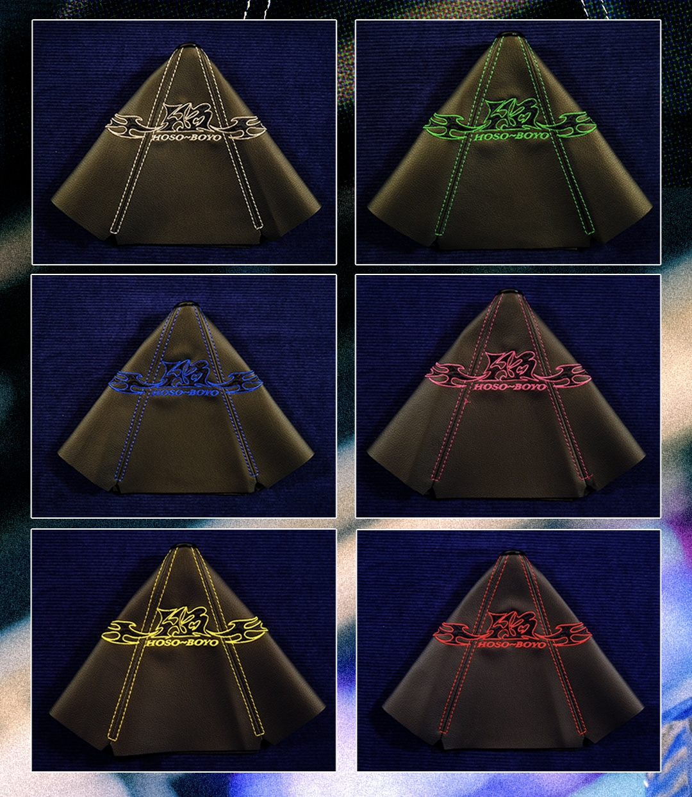

Shift Boots.
2025-present.
This small item was manufactured to accompany the rest of the Joy-Supply interior tune range. It is constructed with four leather panels and embroidered design.
More on this project: https://www.joysupplyjapan.com/product-page/shift-boot-grey https://www.instagram.com/p/DP3NYsgEYlE/?img_index=3

Hoso~Boyo Shift Boots. Leather, aluminium.